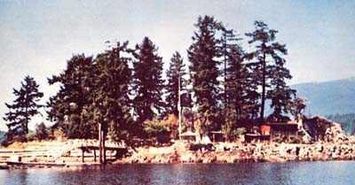
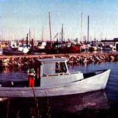
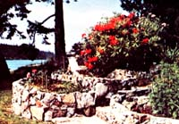
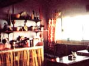
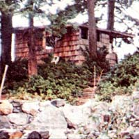

When you think about homesteading, you probably conjure up visions of five acres of hillside meadow overlooking a sparkling stream. Most folks, I suspect, do. But my husband, Vern, and I would like to acquaint MOTHER's readers with our somewhat different route to the "ideal" life.
We are, you see, island dwellers. Not in some glorious tropical climate that features year-round tans gained beside a blue lagoon ... but on a rocky half acre just off the western coast of Canada.
One small half acre of land (especially when it's comprised mostly of rock) may seem to be-and is!-an awfully tiny plot on which to raise the necessities of life for two people. But the productivity of that half-acre increases tremendously when you use such an island as a base from which to forage the surrounding ocean.
We have-for example-more than enough oysters, clams, and crabs at our back door for our own use. Ducks obligingly stop here for the winter and deer populate the neighboring islands. And the waters around us teem with cod, prawns, and world-famous British Columbia salmon. The beach also provides us with ready-made fertilizer in the form of seaweed and starfish, and our garden-when enriched with such bounty-rewards us with fine vegetables.
My husband and I-as members of the Squamish Indian Nation-were able to trade our lot on the North Vancouver Reservation for the right to relocate to this island. We think we got the best of the bargain.
Our new home was once the summer retreat of an industrialist (who leased it from the Squamish tribe) and, although the main house had been moved away, a small cabin still stood on the island when we moved in. The little building's windows were gone and its roof leaked but, with a few hasty repairs, the dwelling soon became quite comfortable to live in.
The former summer resident of our miniature paradise was an avid gardener and once had seven rock-walled terraces built into one side of the island. The resulting-plots of land (which average 10' X 20' in size) were filled with choice topsoil and, when we arrived, were covered with thriving flowers and shrubs. We soon planted a vegetable garden in with the other vegetation and it has flourished every year except one. (Summer, last year, was nothing but a four-month drought for which I was ill prepared. This year, however, I'm ready to cover the whole vegetable patch with layers of mulch at the first sign of an extended dry spell.)
We also inherited a small orchard when we moved onto our island and we've since supplemented it with additional fruit trees, canes, vines, and plants that we've both bought and scrounged. We expect a good crop of raspberries and strawberries this year and even our grapes have proven that they can bear well out here on our little speck of land in the ocean. (The grapes, we'll admit, have been a special case: The prevailing west winds that blow all summer would-if left untempered-excessively dry the vines' leaves and, as a result, stunt the plants' growth. So we beachcombed all the necessary wood and protected our tiny vineyard with a stake windbreak.)
As you might have suspected, no power company services our island with electricity, As a result-although we do intend, eventually, to experiment with a wind-powered generator-we've learned to adjust to kerosene lamps and a battery radio.
Our washing machine is a five-gallon honey pail and an "armstrong" plunger ... and the west wind (which gives us softer, fresher clothes than any commercially manufactured machine) is our dryer. For cooking and heating, we rely on a prized 1903 Great Majestic kitchen stove which we fuel with wood that floats in on the tide. (We've been told that the salt in this driftwood will eventually "eat out" our range's firebox ... but it's hard to pass up free fuel.)
We planned to buy an indoor composting toilet until we learned that it operates on electricity and costs $700. So we settled, instead, for a primitive outdoor privy which, to be sure, has its own not-to-be-denied compensations: a spectacular view from its door and the melodious singing of birds in nearby trees. I have yet-even on the rainiest days-to long for the tiled bathroom in the house that we sold when we moved here.
A garden, fresh venison, ducks for the hunting, oysters, clams, crabs, prawns, salmon ... and a plentiful supply of driftwood to cook our meals over. That all sounds as if we live the epitome of a self-sufficient life, doesn't it?
Well that's not quite true. We still find that we can use a few dollars from time to time to make our island existence more pleasant. We've never mastered the traditional canoe, for instance, and the boat we do use needs fuel and fuel costs money. So, to earn the cash we want in as enjoyable a way as possible, we've taken up the business of salvaging logs.
This little enterprise consists, simply, of retrieving-from the beach and from the water-logs which slip out of the big lumber companies' log booms as the giant rafts of timbers are floated to the mills. We sell the logs we find to a salvage station which, in turn, returns them to their owners. We think this is a good way to earn our living since it also [1] helps clean up the water in our area and [2] means that, for every "stray" we find, one less tree has to be cut.
When we decided to enter this salvage business, we knew we'd need a heavy-duty boat to tow the big, heavy logs we found the distances that we'd sometimes have to take them. So we took part of the $20,000 we'd gotten from the sale of our house on t he reservation, bought an old Navy lifeboat, and began to fiberglass its hull and install a large diesel engine.
Unfortunately, we underestimated both the time and cost involved in rebuilding such a boat. What we'd planned to take four months and $4,000 had soon absorbed 10 months and $10,000. Then, just three days before it was to be launched, our newly restored-but uninsured-boat caught fire and burned back to little more than a basic black hull.
We had no choice but to start over again. Only this time-thanks to our experience and the help of a friend-we were able to rebuild the vessel in just seven weeks and for only $2,000. At long last, after a year of much money going out and very little coming in, we're ready to start our salvage operation. We were lucky enough to find a 1,000-gallon tank of diesel fuel on our island (left behind by the industrialist) when we moved in and we hope to use it in our boat. Does anyone know if diesel fuel gets stale with age?
Yes, there are drawbacks to life on an island. For one thing, you can't just "run down to the store" whenever you want a stick of butter ... nor, of course, is medical assistance as readily available to us as it is to most other North Americans. And we've learned the hard way that people who transport all their building supplies by boat often spend more time getting those materials to the construction site than they spend on the actual job itself.
And then there's the matter of fresh water ... or, rather, the lack of it. Our island-you see-has no springs, no wells, no freshwater source of its own. So we've learned to get by on 40 gallons of drinking water a week (which we pack in from "outside" in five-gallon containers), plus whatever rainwater we can collect from our bountiful winter monsoons. When we can, we plan to float a tank on a small barge, tow it to the stream on a nearby island, fill it, and tow it back again for future use.
Still, there's much to be said for a tide that daily delivers a fresh supply of lumber and shingle bolts "free for the gathering" to our front beach. Not to mention the occasional little surprise "extras", such as the dog dish which we now use as a gosling feeder.
And what if the mink and the eagles do harass the geese from time to time and did cause my cat friend to suddenly disappear? That's offset, I feel, by the fact that we're never troubled by rats or mice or marauding dogs.
Yes, we like it out here. And we plan to stay. We've already removed the rocks from the 30' X 60' hole where the main house once stood and we've been composting the area in nopes that we can plant an additional garden there next year. And, before long, we'll round up the assortment of tempered plate glass we've collected over the years and either build ourselves a small greenhouse or a solar collector ... or both. We'll keep you posted on our progress.
For those of you who also might be interested in settling in British Columbia, I've sought out the following information. It is, however, not entirely encouraging.
There's a boom in waterfront property here, and land costs in the southern part of the province will probably be too high for most would-be immigrants. There is some land, however, on the northern coast that's still available at reasonable prices. The weather in that area is temperate even in winter. But people who know tell me that the constant cold-season rains, and the isolation, end the dreams of many who try living there,
At one time the government actively promoted homesteading in the northern sector of British Columbia. This is no longer true. Most people who participated in this program found themselves daunted by the acid soil ... or soon succumbed to the better money offered in the logging and fishing industries.
So the northern coastal region of B.C. is now dotted with abandoned farms that have already reverted to forest. Still, I believe that-with a lot of gumption and a revival of organic gardening (and a strong resistance to a regular paycheck)-homesteading is still feasible up there.
|
|
 |
 |
|
 |
 |
 |